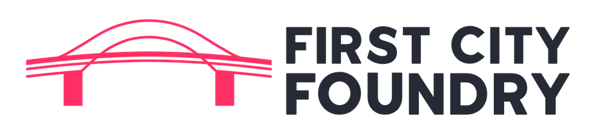

Process improvement
Reduce friction
Understand the current process, remove avoidable steps, and clarify ownership and handoffs.
Explore the work
First City Foundry helps organizations find what is slowing them down, improve how work moves, and put the right systems and tools into practice. For small businesses, growing teams, and enterprise organizations.
Map the work, surface bottlenecks, and clarify what is worth changing first.
How we startSimplify processes, connect systems, and choose tools that fit the people using them.
Explore servicesGet hands-on help implementing a better workflow, system, or tool, then equip your team to run it.
Clearer ways to get work done
Chosen to fit the real need
Connected and usable
Equipped to keep improving
Operational and technology partners
The work starts with your goals and constraints, not a preselected technology. We help teams make practical improvements that fit how they operate.
Understand the current process, remove avoidable steps, and clarify ownership and handoffs.
Explore the workSelect, connect, and configure tools around the work, including automation or AI where it fits.
See the optionsPut improvements into practice and help the people doing the work sustain them.
How we implementWe look at the whole operating picture: people, process, information, tools, and the habits that make improvements last.
Roles, handoffs, and decision ownership.
Clear, repeatable ways to get work done.
Useful signals for timely decisions.
Technology selected for fit and usefulness.
Less repetition, with people still in control.
A considered option, not the starting assumption.
First City Foundry brings operational architecture and technology delivery together through Buildly and Kurent Co, then works with your team to make improvements real.
See how we helpProduct and technology systems, from selecting the right approach through building and delivery.
Operational architecture that makes processes, ownership, and delivery easier to see and improve.
Practical help for organizations that want their work to run better.
Name one real operating problem. We will use it to understand whether a practical introduction or working session makes sense this quarter.
First City Foundry Podcast
Conversations about the people, systems, and decisions behind better work.